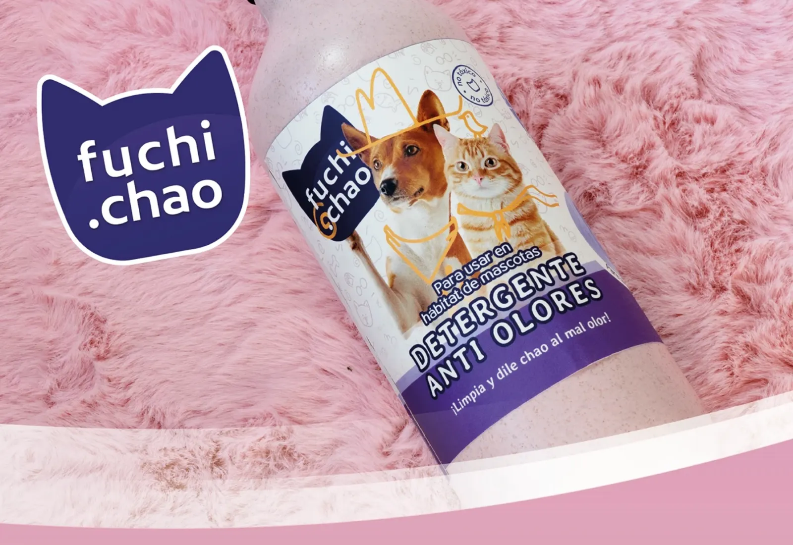
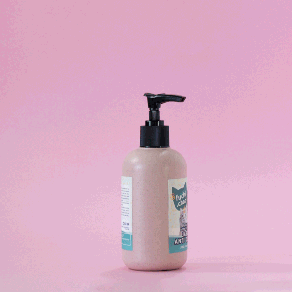
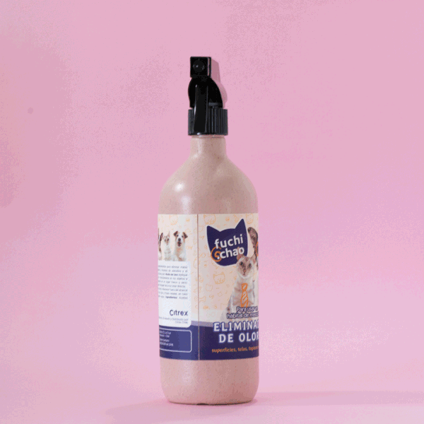
¿Cómo llevar un producto de una línea industrial al contexto doméstico, aumentando su valor percibido y conectándolo con las necesidades de un nuevo consumidor?
Ese fue el desafío detrás de Fuchi Chao. La oportunidad estaba en transformar una solución funcional en una marca cercana, capaz de conectar con el mundo de los petlovers. Así nació una propuesta que deja de hablar únicamente de las propiedades del producto para conectar con algo más cotidiano: la convivencia, el cuidado y el bienestar de quienes comparten su vida con mascotas.
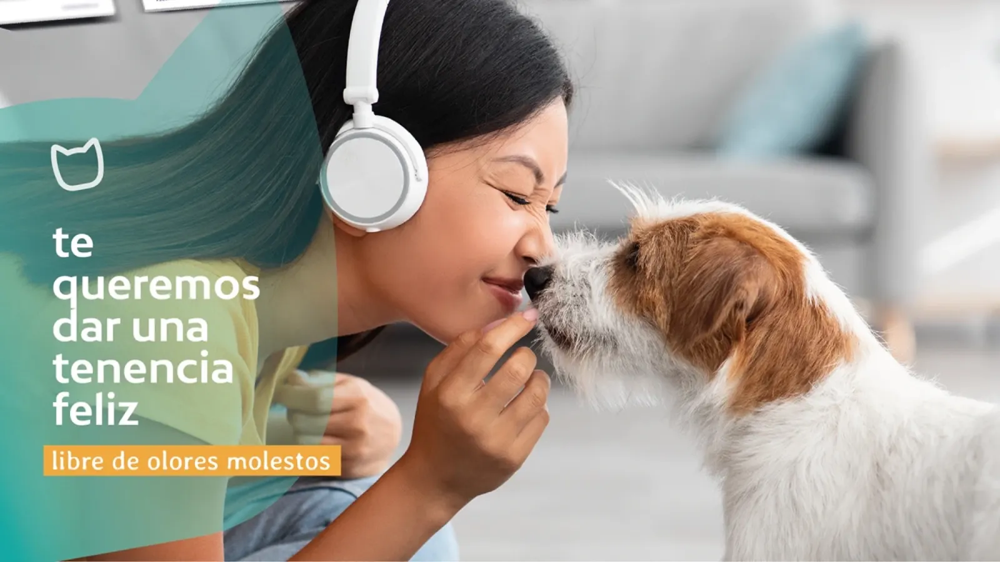
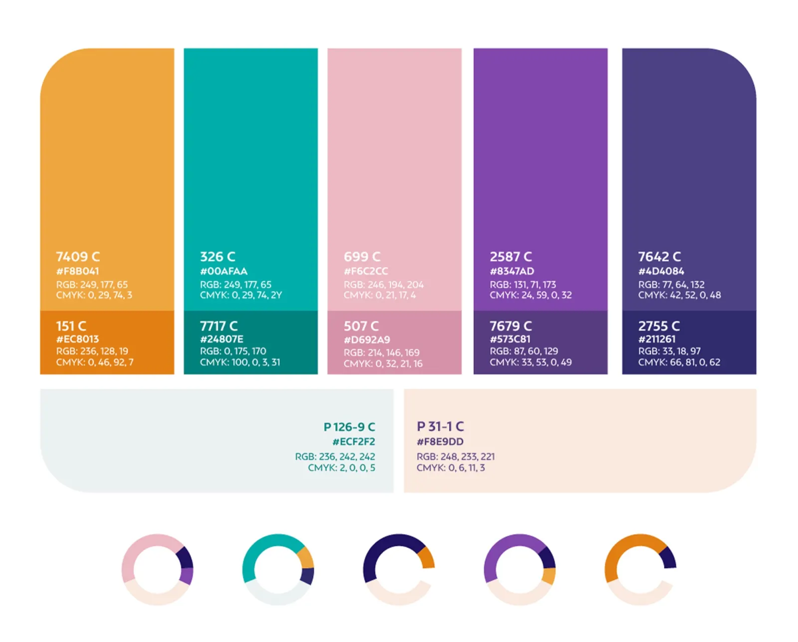
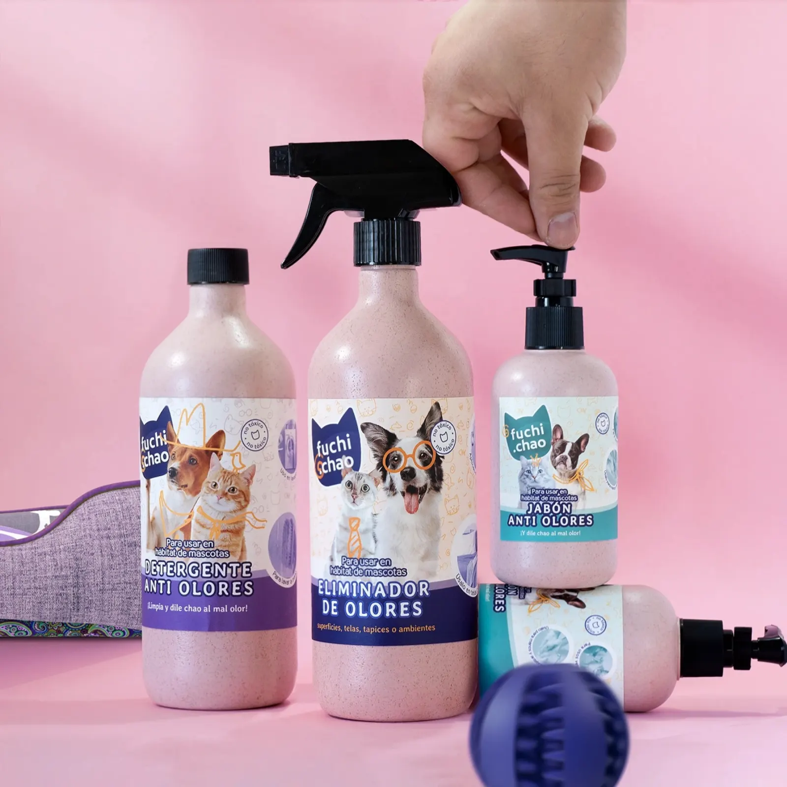
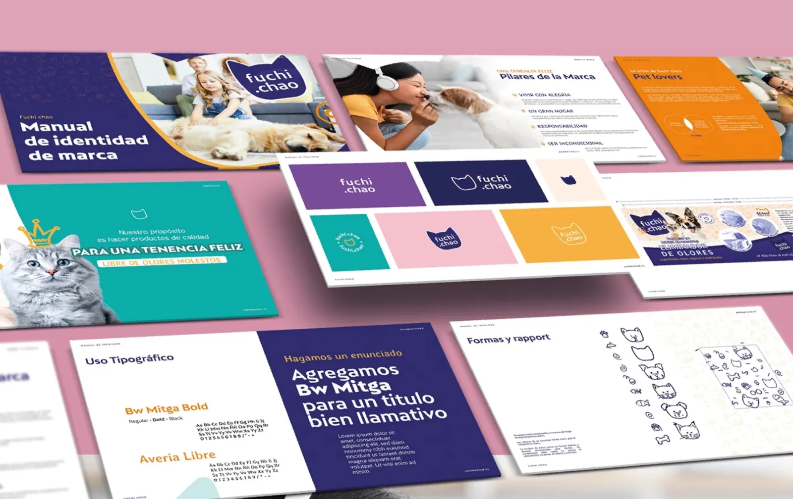
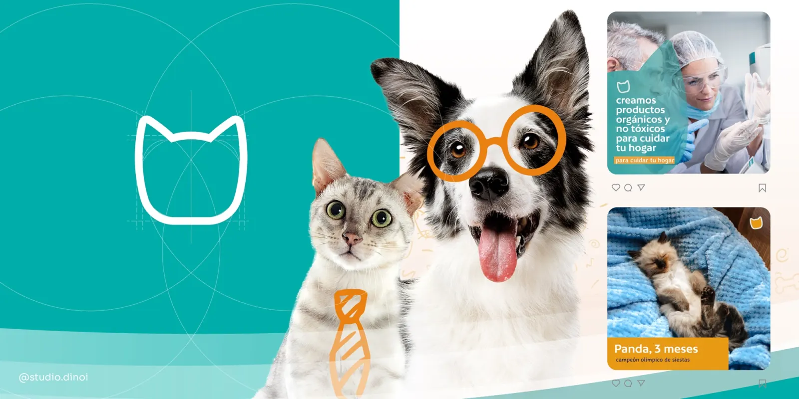
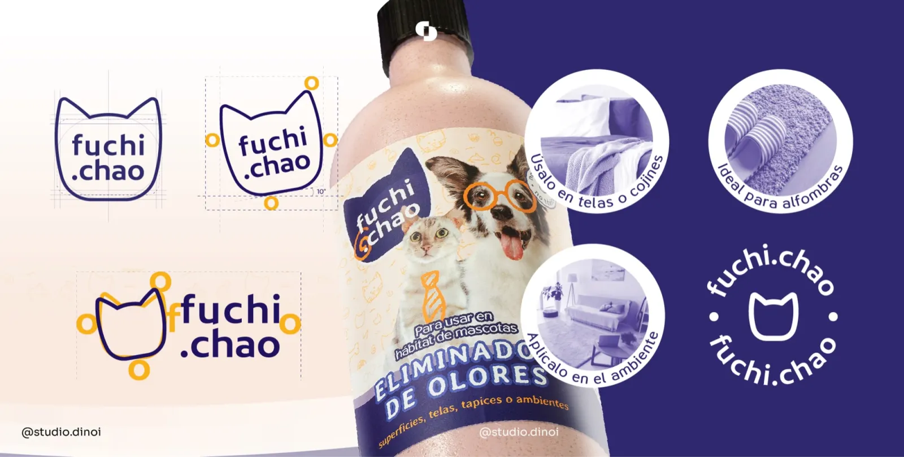
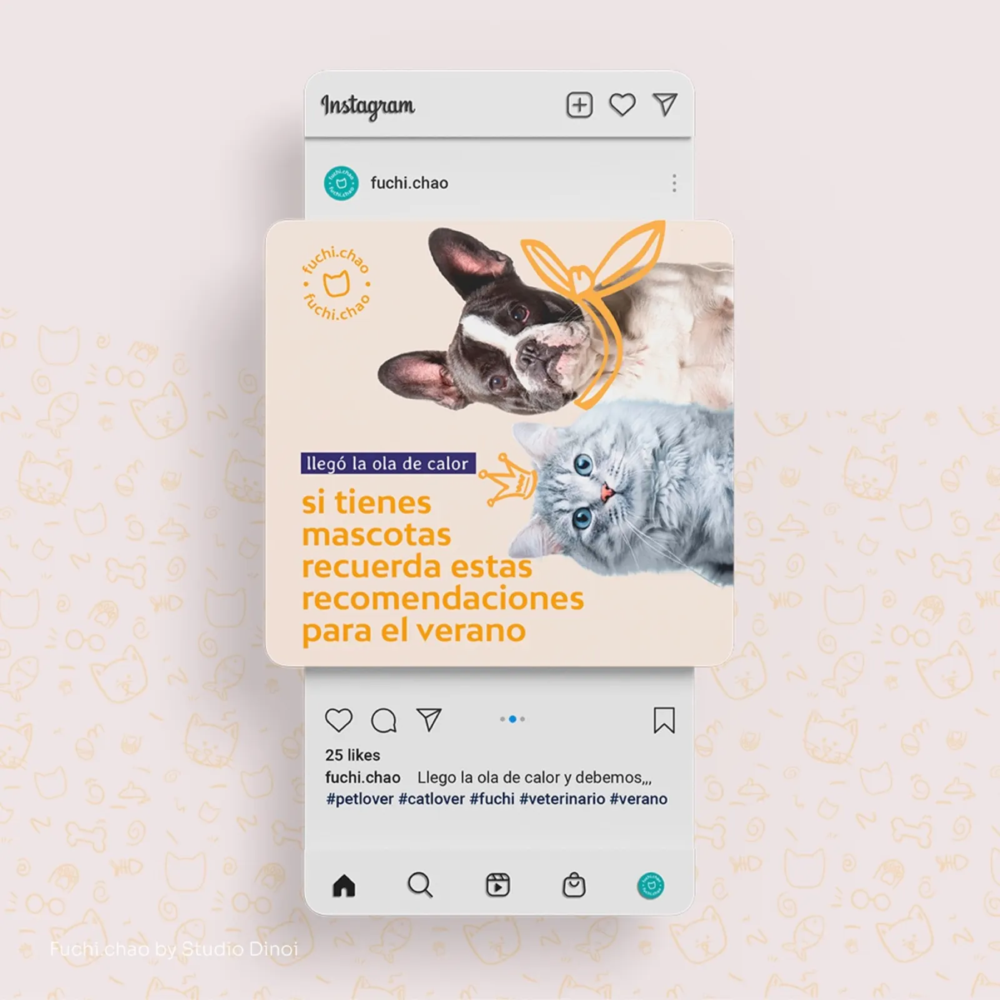

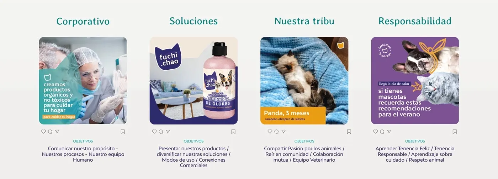
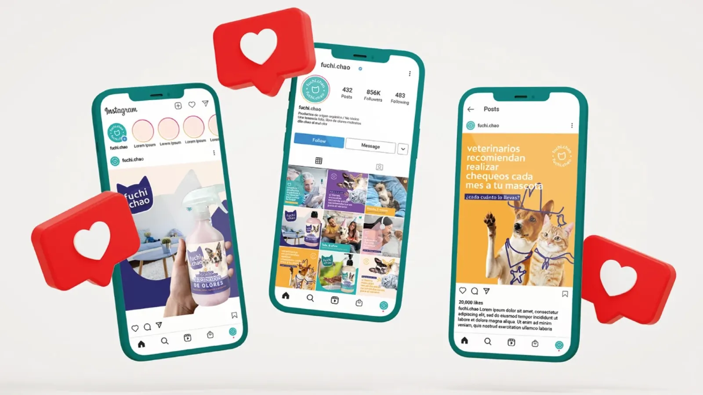
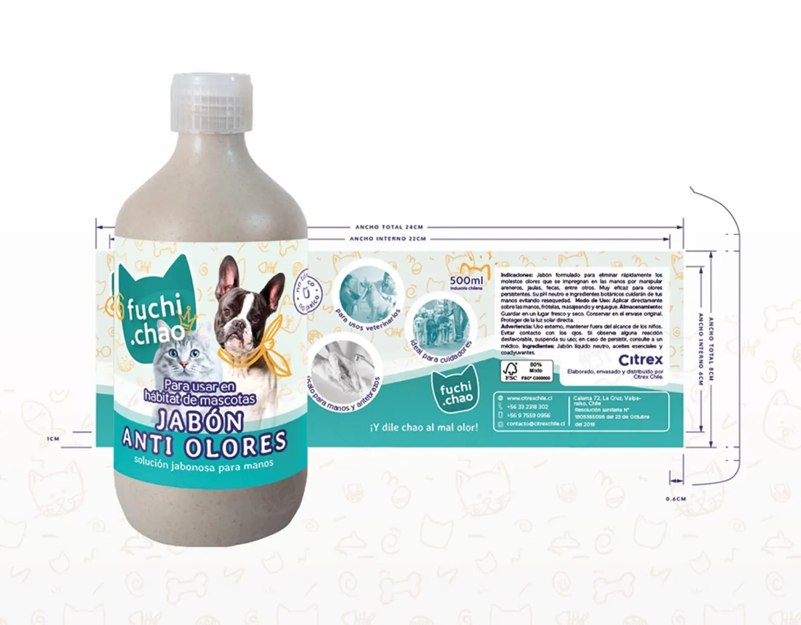
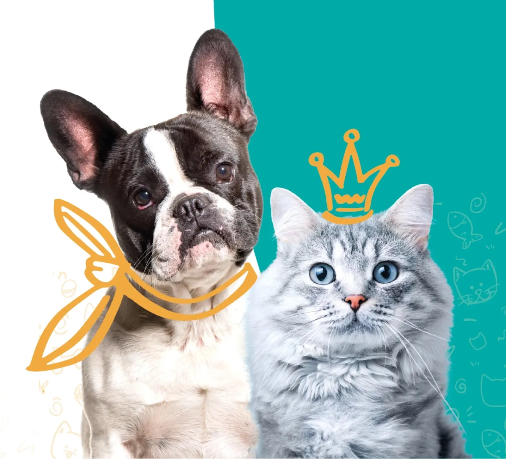
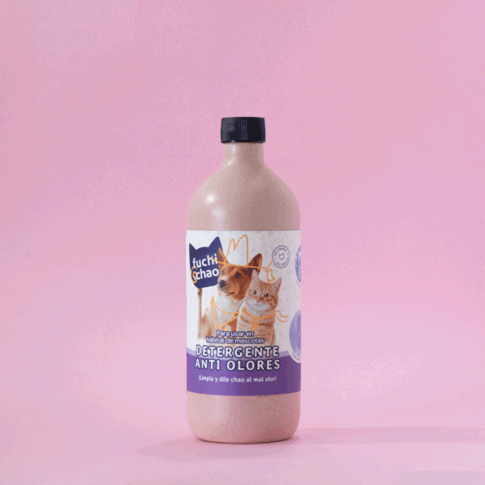